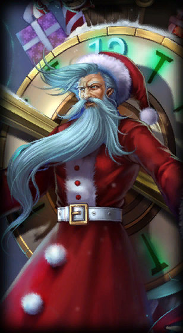
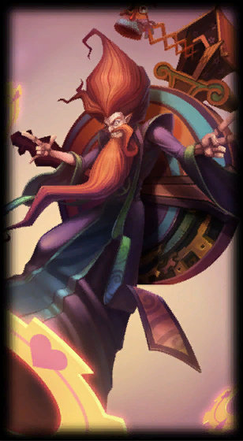
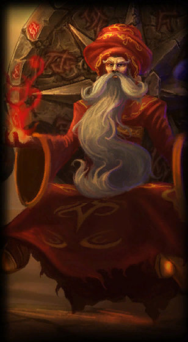
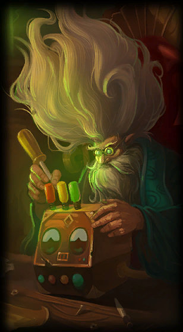
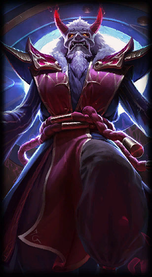
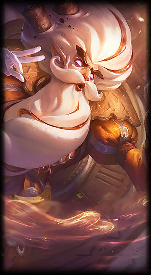
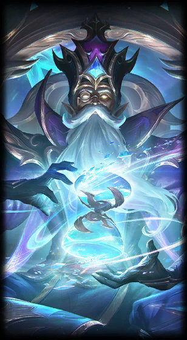
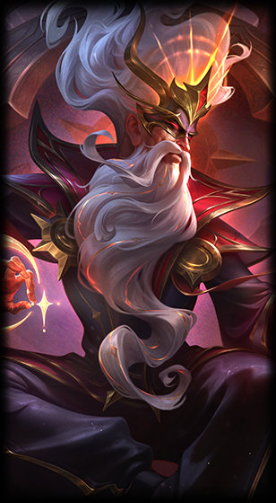

Zilean
Zilean

Old Saint Zilean

Groovy Zilean

Shurima Desert Zilean

Time Machine Zilean

Blood Moon Zilean

Sugar Rush Zilean

Winterblessed Zilean

Arcana Zilean
Once a powerful Icathian mage, Zilean became obsessed with the passage of time after witnessing his homeland's destruction by the Void. Unable to spare even a minute to grieve the catastrophic loss, he called upon ancient temporal magic to divine all...